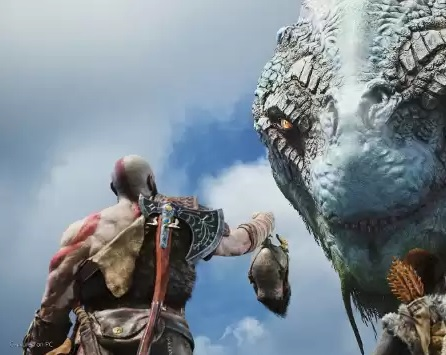
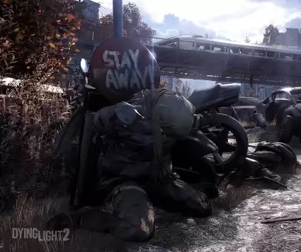
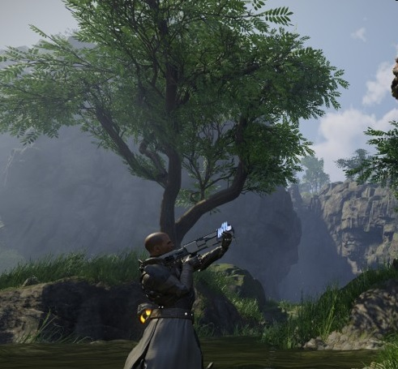

Premiery gier 2022 – aktualny kalendarz najważniejszych debiutów gier w 2022 roku
Styczeń
God of War
Na samym początku gry ma miejsce samobójczy skok Kratosa z wysokiego klifu na górze Olimp do Morza Egejskiego. Fabuła przenosi gracza trzy tygodnie wstecz, wyjaśniając okoliczności wyżej opisanych wypadków. Po 10 latach służby bogom olimpijskim, Kratos zawarł z nimi układ: zabije dla nich siejącego zniszczenie Aresa (ten - chcąc pokazać ojcu - Zeusowi, jak potężnym jest bogiem, prowadził oblężenie Aten), z kolei Olimpijczycy mieli sprawić, że grzechy z przeszłości Spartiaty zostaną mu wybaczone (Kratos chciał pozbyć się wizji rodziny, która zginęła z jego ręki). Heros chciał również odegrać się na bogu wojny - za zesłane na niego szaleństwo, w którym zamordował swoją żonę i córkę. Kratos wyruszył do Aten - podczas podróży zabijając na zlecenie Posejdona potwora, który terroryzował morza - Hydrę. W Atenach spotkał Wyrocznię, która powiedziała mu, jak można powstrzymać Aresa - zdobyć i otworzyć puszkę Pandory. Wojownik wyruszył na pustynię, gdzie spotkał ostatniego żywego tytana: Kronosa.
źródłoLuty
Dying Light 2: Stay Human
Akcja Dying Light 2 toczy się dwadzieścia lat po zakończeniu pierwszej części, w 2034 roku. Opowiada nową opowieść i znajomość fabuły pierwszej części nie jest wymagana do zrozumienia fabuły sequela. Po opanowaniu epidemii zombie w mieście Harran, rządowi i korporacyjni naukowcy zaczęli badać zmutowany szczep wścieklizny, który wywołał tragedię. Szukano dla niego zastosowań komercyjnych i militarnych w celach zarobkowych. Pościg za pieniądzem prowadzi jednak do katastrofy i pod koniec 2021 roku wirus wydostaje się z genewskiego laboratorium badawczego. Niezwykle zaraźliwa choroba doprowadza do globalnej pandemii, anarchii i upadku cywilizacji. W przeciągu dwóch lat prawie cała populacja Ziemi zostaje zarażona. Na świecie pozostaje tylko kilka osad oraz jedno miasto – Villedor, w którym toczy się akcja gry.
źródłoMarzec
Elex
Elex to trzecioosobowy RPG akcji z otwartym światem, będący najnowszym dziełem niemieckiego studia Piranha Bytes, które w przeszłości stworzyło takie serie, jak kultowy Gothic czy Risen. Tytuł zadebiutował 17 października 2017 roku na komputerach osobistych oraz konsolach PlayStation 4 i Xbox One.Elex osadzone jest w całkowicie nowym, autorskim świecie, łączącym cechy gatunków science fiction, fantasy i postapo. Akcja gry rozgrywa się na planecie Magalan, w którą uderzył meteoryt, kładąc niemal całkowity kres zamieszkującej ją wysoko rozwiniętej cywilizacji. Ocalali są jedynie cieniem tego, czym byli przed katastrofą. Jedni wciąż korzystają z zachowanych pozostałości dawnej technologii, inni zaś próbują tworzyć więź z naturą. Obie grupy mają jednak coś wspólnego. Otóż drugim skutkiem kataklizmu było pojawienie się nowego pierwiastka na Magalan
źródło